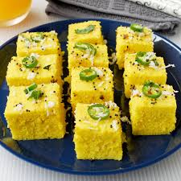

Back to Home
Dhokla

Description
Dhokla is a soft and spongy steamed snack from Gujarat made with gram flour (besan). It is light, fluffy, and has a slightly tangy taste, perfect as a breakfast or evening snack.
Ingredients
- 1 cup gram flour (besan)
- 1/2 cup yogurt
- 1 tsp sugar
- 1 tsp salt
- 1/2 tsp turmeric powder
- 1 tsp eno fruit salt (or baking soda)
- 1 tsp mustard seeds
- 1 green chili (slit)
- 8-10 curry leaves
- 1 tbsp oil
- 1/2 cup water for steaming
- Fresh coriander leaves for garnish
Steps
- Mix gram flour, yogurt, water, salt, sugar, and turmeric in a bowl to form a smooth batter. Let it rest for 15 minutes.
- Add eno fruit salt, mix well, and immediately pour the batter into a greased steaming tray.
- Steam for 15-20 minutes until a toothpick inserted comes out clean.
- Heat oil in a small pan, add mustard seeds, curry leaves, and green chili. Pour this tempering over the steamed dhokla.
- Cut into pieces, garnish with fresh coriander, and serve with green chutney.
l